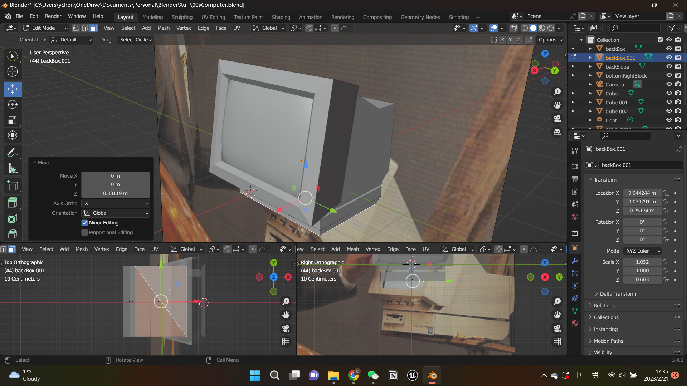
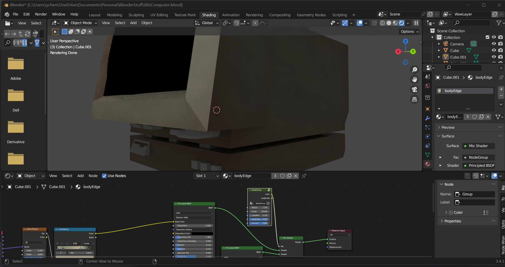
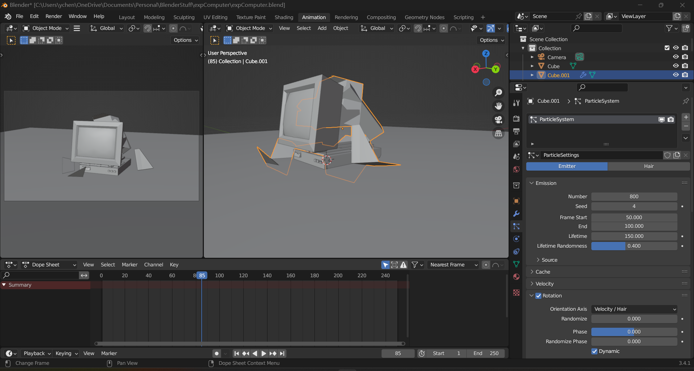

I'm constantly thinking about the definition of future past. I think the future is essentially a response to the past, and the future is essentially a transient state viewed from the perspective of the present. The concept of time can be blurred, so I hope to establish some connection with the past through the imagination of the future.
If the apocalypse does come and overthrow all existing institutions, will humanity draw inspiration from past experience and recreate a new order? How far back can such a past go? Will what we are experiencing now become a kind of past? Therefore, I believe that first of all, religion as a carrier of belief with a long history and a relatively stable group of fans can be reproduced. What about the Internet? Will this new thing, which has risen and become strong in the 21st century, remain in the memory of some people and be translated into reality?
Therefore, I want to build a new belief system with a strong belief in the Internet and the market mechanism it extends.
 2. Development
2. Development
By diving into the design of a worshipping system, I started to imagine the way that people might worship a god of the Internet. The first idea came into my mind was the direct combination of an altar with an old-fashioned compuer.
But it seems to be farfetched, feels like a forced combination that does not make any sense. So I kept thinking about the effct of the time and space from now to the future. As time goes by, human memory would become blurred and some of them might also be stretched and fall down. But the ritual system and ceremony would be memorized.
Also, speaking about the feature of the contents on the Internet, it is rapid-changing, hard to be memorized, and easy to be distorted. I kept thinking about the shape of an Internet god, but I found out at the end of the day that because of the features that the Internet is holding, its form can be alterable and do not need to be fit in a specific physical form. Therefore, I think it would be fit to have a burning down for the shape of a computer as an illusion. in an altar pot
I started with creating a computer   I added the collision effect to break the computer down 